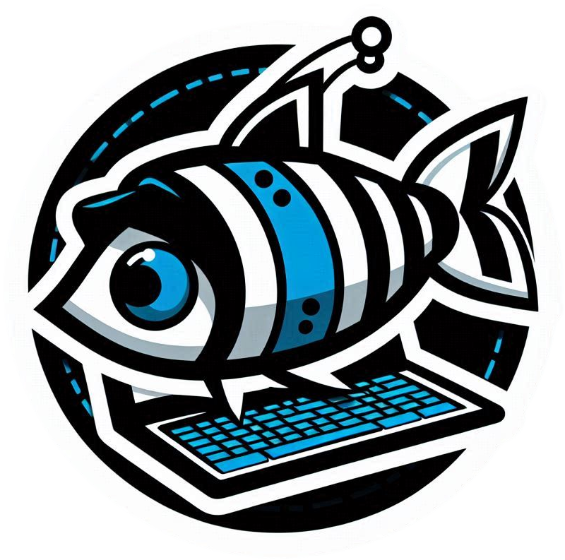
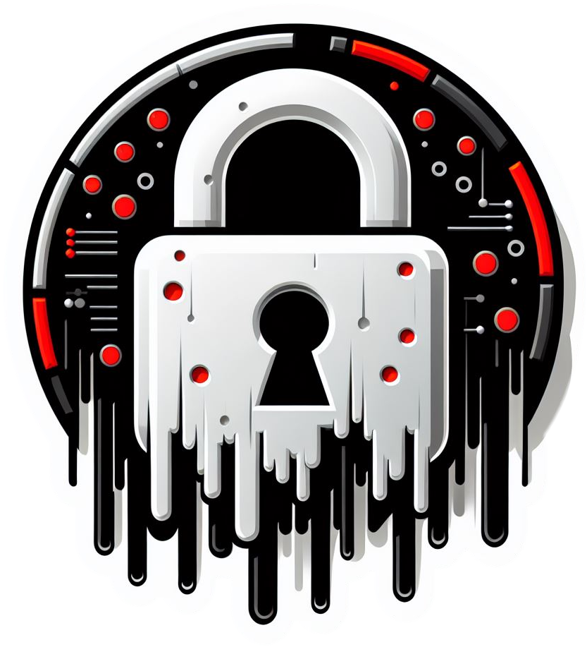

What Is Computer Security?
Risks:
Most cybercrime is fuelled by 2 main objectives, financial gain and obtaining sensitive infor-mation / tarnishing a person’s identity. There are many ways for someone to obtain your in-formation which we will talk about here. Some of the main ways include:
|  |
Phishing attacks Phishing attacks are some of the most popular due to how easy they are to execute and repli-cate as all it takes is a simple link. Most people will experience this as a random, normally low-followed “bot” account will send a link or an email on a business/school email. Clicking the link sends the user to a malicious website that contains a form of malware, this will either be to sabotage systems in organizations or to trick the user into revealing sensitive information such as passwords. On average 1.4 billion social media accounts are hacked every month, this number will con-tinue to rise as more and more people create social media accounts. |
|---|
|  |
Data breaches A data breach is the event of an attacker or group of attackers gaining access to a company’s data. Sadly, this is a harsh reality that even the most advanced cyber security systems can be penetrated and exploited, often through employees with social engineering. If the data is pub-lished this isn’t much to do except try to change passwords, emails, and other account securi-ty. In 2018 at least 30 million Facebook accounts were hacked in a single data breach. |
|---|
|
Brute force attacks In a brute force attack the attacker will use automated tools to attempt thousands of possible passwords until the correct one is entered. This method can be very time-consuming but ef-fective if the password is weak. A Google report found that 20% of social media accounts will be compromised at some point. |
|---|
Phishing attacks:
- Be aware and cautious of suspicious emails, messages, or other means that ask for personal and or login information.
- Always verify the legitimacy of the sender before providing sensitive information.
- Only provide sensitive information to trusted websites, and ensure you check the URL of the site to ensure its legitimate.
Data breaches
sadly as discussed there isn’t much to prevent it but you can protect your account in the event of a data breach:
- Use strong and unique passwords for each online account so if one site is breached your other accounts aren’t.
- Regularly update your devices, operating systems, and applications to ensure you have the latest security.
- Be careful when granting permissions to third-party apps.
- Adjust privacy settings to make your account private.
Brute force attacks
- this is quite easy to avoid and defend against with some simple steps:
- Use strong passwords with a combination of letters, numbers, and special characters (=@#?).
- Don’t use easily guessable information in your passwords such as names, birthdays, and locations.
- Enable account lockouts, this means the attacker cannot guess the password more than a few times before they are locked out (this should be turned on as standard).
- Consider using a password manager to create and store your passwords.
- You can try out this website to see how secure your password is!